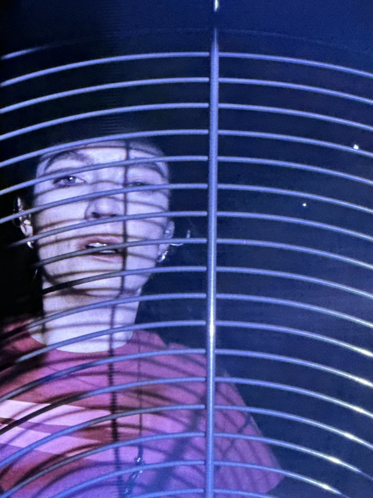
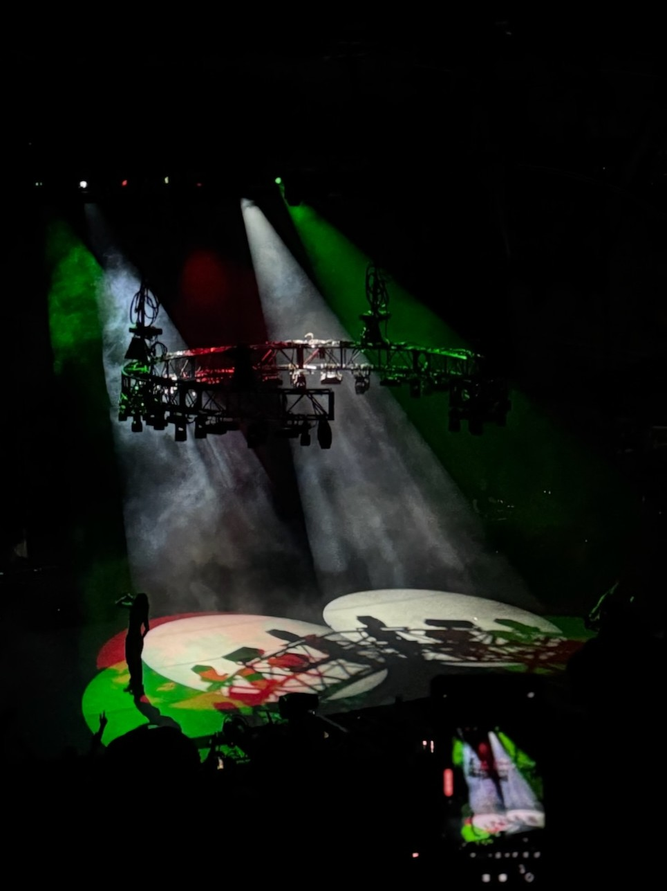
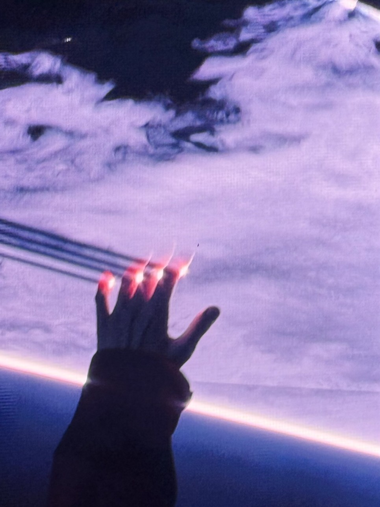

Since her debut album twelve years ago, Lorde – the stage name of Ella Yelich O'Connor – has demonstrated a tendency for rebellion and a dissatisfaction with sitting still. Her moody Pure Heroine spoke to the suburban teen angst of the chronically online post 9/11 generation. From a young age, she articulated this generation's thoughts – at a time when many were too young to do so – and demanded they be taken seriously. She spoke for them – for us, while we unknowingly stored parts of ourselves inside her work. ULTRASOUND unlocks them.
On a stage wedged between two massive rocks formed over 300 million years ago, Ella forces us to meet her where she's at, in her purest and rawest form: a t-shirt, Calvin Kleins, and barefoot. A laser beams her onto stage while she waves her arms around, like a siren luring us with her song. She means no harm though – she's here to celebrate with us. "Hammer" smashes this tension to pieces; the stage, Ella, and the crowd all explode into a fit of movement. We're brought into the world of ULTRASOUND. She takes us to the edge which, according to her, is where the "magic" lives.

Since her Solar Power tour four years ago Ella has gone through a transformation, evident in her music and performance. On Virgin she opens up about her struggles with an eating disorder, her split from a long-term boyfriend, and her journey to discover what being a woman means to her. She takes us deep into the throes of her most intimate – often sexual – moments. The album cover shows an x-ray of her pelvis; we literally see all of her layers stripped back. This stripped-back, transformative nature is reflected in ULTRASOUND. There were more lasers, flashing lights, movement, and people – not to the detriment of intimacy. What starts as a desolate stage slowly transforms as more objects enter and exit, each one with a unique purpose: an industrial fan with a camera behind it, a ten foot tall block of speakers, and even Ella herself.
During "Current Affairs" she strips into her Calvin Kleins, singing half of the song with her pants bunched around her ankles. During "Shapeshifter," we watch her genetic code get rearranged as a ring of blue lights lower from above and surround her. Her two backup dancers leap, play, swirl, dance, and linger. They are strange but effective abstractions of Ella's most inner being. The biggest gut punch of the night, "Supercut," is nothing short of perfection. Laying on the ground, practically naked and soaking wet, the big screens bring us face to face with her: "In my head, I play this Supercut of us." She sings to an ex-lover about being unable to escape the memory of him. A backup dancer runs on a Woodway treadmill, representing Ella's past self we hear on Melodrama – a young woman in her late teens navigating heartbreak. It's raw, fleeting, but more than anything, it brings out all of our own heartbreaks we forgot were stored in "Supercut." I cried. Before the last chorus, Ella gets on the treadmill herself – becoming the heartbroken nineteen-year-old woman again. No matter how fast or far she runs, she can't escape the memories, wrapped up in the ribbons. Eventually, she steps off the treadmill entirely, resolving the memories and returning to her present self. Or is she still secretly running?

As expected, her hits "Team" and "Green Light" were some of the most celebrated of the night. These generational anthems couldn't be more relevant. "Team," a message of solidarity, is a reminder that as humans we are obligated to look out for each other. Red, green, and white lights shine behind her, representing the Palestinian flag (she has been outspoken about her solidarity with Palestinians). "Green Light" speaks to a world that feels more out of control each day – wouldn't it be nice if we could all let go? Ella makes it clear that, despite the declarations of her past self, she's still trying: "Oh I wish I could get my things and for once in my life, let the fuck go."
Throughout the show, I found myself in disbelief that I was even there. However, her monologue before "Liability" was grounding. She speaks about her time visiting Red Rocks during her Pure Heroine tour, and how she knew that playing here for the first time would be an "arrival."
"It was snowing…It activated a very graspy piece of me…I want the show carved into the rock, under the stars…I was not ready. There was so much that needed to happen before I could sit in front of you, right here…I needed to figure out that all of this, it's not about me…I am one of many people that get to feel this crazy thing that swirls through all of us…Now that I'm finally sitting here in front of you, I think what I'm realizing is that the arrival is actually to do with this rock and this plant life and these ridges and the fact that there is always a deeper, older story being told…I thank you for waiting 4,6,9,12 years for me to get here. This is not my show, this is our show."
During the highlight of the show, "David," Lorde goes from royal to biblical. Donning a glowing vest made up of modular LEDs, she walks through the crowd; a ball of light in the dark, Moses parting the Red Sea. On Solar Power, she stated that she's not our "savior," yet during "David" she's nothing short of a prophet. Her misty-eyed crowd surrounds her, reaching out for her blessing. She arrives at the B stage at the center of it all. The vest is a transformation. We watch as she sheds her skin and morphs into her new self; it's not quite ready though. One last time, she brings out my ten-year-old self with "A World Alone" and "Ribs." For those two songs, it's just us. "I don't want this to end, but everything ends, so let's end with the oldest, most precious song we have." Lasers and smoke form a sky above her. She reaches up to grab whatever's above it. For a moment, we're up there with her – then we fall.
